EUROPEAN HEAVY & OVERSIZE TRANSPORT PLATFORM
The escort car is already on the road.
One transport order. One D-ID. Every step, partner and document connected — from planning to delivery across Europe.

DAJCEUROPEAN HEAVY & OVERSIZE TRANSPORT PLATFORM
One transport order. One D-ID. Every step, partner and document connected — from planning to delivery across Europe.